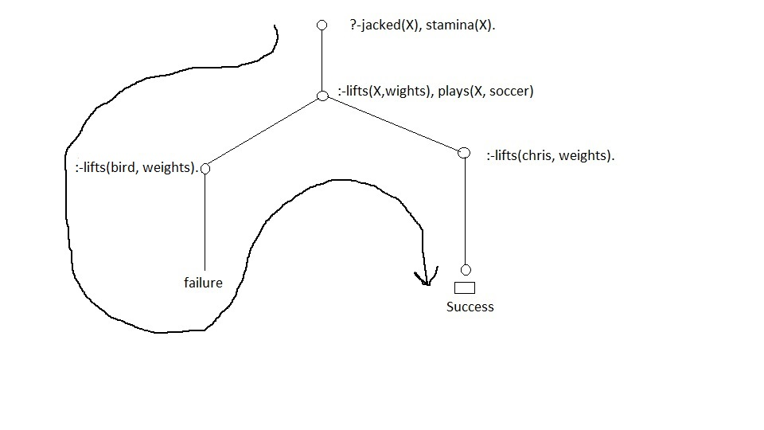

Portfolio
/*code*/
/*facts*/
plays(bird, soccer).
plays(chris, football).
plays(chris, soccer).
plays(tim, football).
lifts(chris, weights).
lifts(tim, weights).
/*end of code*/
/*rules*/
jacked(X) :- lifts(X, weights).
stamina(X) :- plays(X, soccer).
Questions
- who is jacked?
- who has stamina?
- who is jacked and has stamina?
Query in prolog
?-jacked(X).
?-stamina(X).
?-jacked(X), stamina(X).

